Candidate List 20261005Last night — ZTF: 2,708 passed basic cuts (64 young) · LSST: 0 passed basic cuts (0 young)Previous Day Next Day
Section 1: New Sources (age<1d) Section 2: Old (1-5d) sources observed last nightplaceholder
Section 1: New Afterglow/FBOT Cands Last Night (0)
Section 2: Older Sources Observed Last Night (10)
0. [ZTF] ZTF26abxwnlk (Afterglow?) [Back to Top] [Share] [Trigger Swift] [Fritz Alert] [Fritz Source] [Lasair]RA, Dec: 294.48178, -7.75428 19h37m55.63s, -7d-45m-15.40sGalactic (l, b): 31.21692, -13.83817 ext(g-r) = 0.313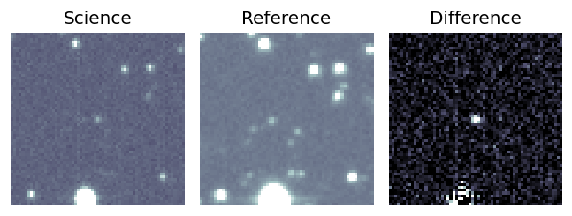
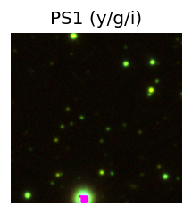

TESS: Sectors [54 81]
PS1: 0 sources in 3 arcsec
LegacySurvey: 0 sources in 3 arcsec
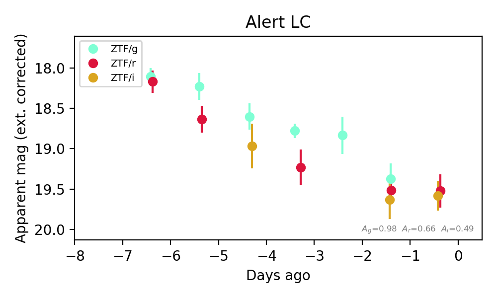
Extinction-corrected gr color:
From alerts: -0.14 +/- 0.25 mag
Extinction-corrected gi color:
From alerts: -0.26 +/- 0.3 mag
Extinction-corrected ri color:
From alerts: -0.06 +/- 0.28 mag
Consistent with synchrotron, g-r>0!
Rise Rate:
r: 0.2 mag/day
Fade Rate:
g: 0.24 mag/day
r: 0.24 mag/day
1. [ZTF] ZTF26abycuik (FBOT?) [Back to Top] [Share] [Trigger Swift] [Fritz Alert] [Fritz Source] [Lasair]RA, Dec: 240.17188, 60.3658 16h 0m41.25s, 60d21m56.89sGalactic (l, b): 92.58072, 44.0037 ext(g-r) = 0.01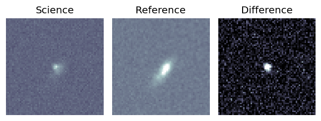
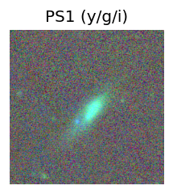
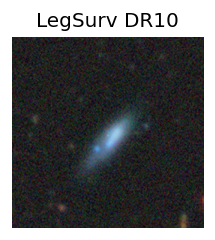
TESS: Sectors [ 15 16 18 22 24 25 48 49 50 51 55 58 75 76 77 78 82 85
117 120 121]
SDSS (<15 kpc):Found SDSS phot-z: z=0.04; peak abs mag = -19.18
PS1: 0 sources in 3 arcsec
LegacySurvey: 1 sources in 3 arcsec Closest: d = 2.70 arcsec, 235.9 deg (east of north) photoz=0.05 (68% bounds 0.04, 0.06), type=SER peak abs mag (ext. corrected) = -19.69 (68% bounds -19.18, -20.13)
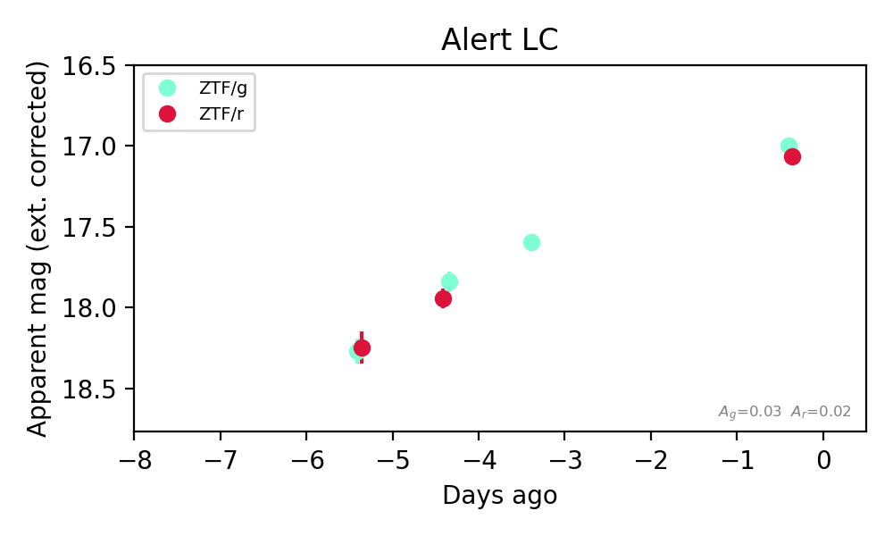
Extinction-corrected gr color:
From alerts: -0.07 +/- 0.06 mag
Rise Rate:
g: 0.23 mag/day
r: 0.27 mag/day
Fade Rate:
2. [ZTF] ZTF26abymrub (FBOT?) [Back to Top] [Share] [Trigger Swift] [Fritz Alert] [Fritz Source] [Lasair]RA, Dec: 351.94755, 41.95061 23h27m47.41s, 41d57m2.21sGalactic (l, b): 106.69862, -18.26927 ext(g-r) = 0.112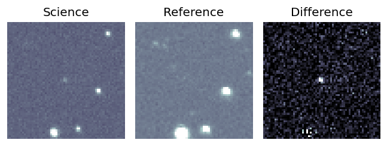
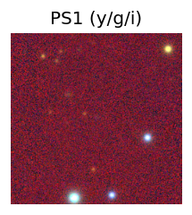

TESS: Sectors [16 57 84]
PS1: 1 source in 3 arcsec Closest: d = 4.60 arcsec photoz=0.49+/-0.65 peak abs mag = -27.83
LegacySurvey: 0 sources in 3 arcsec
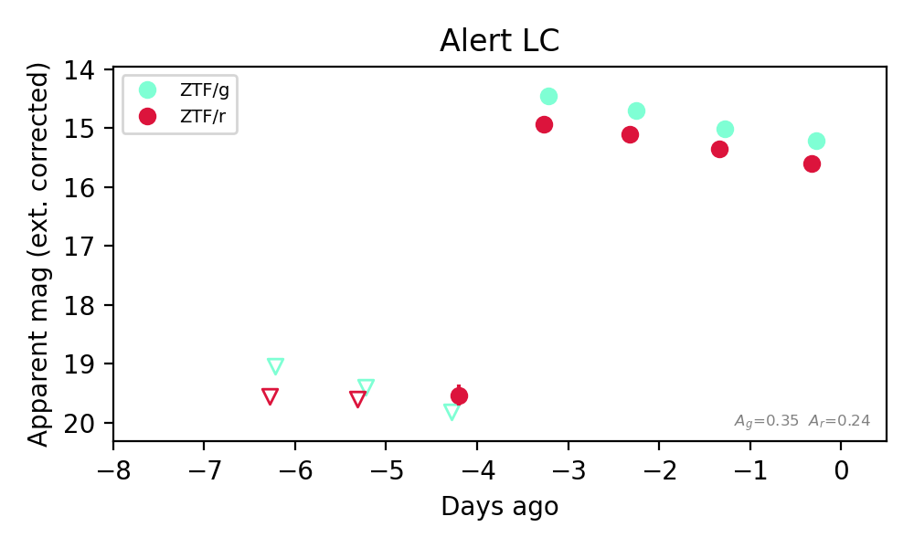
Extinction-corrected gr color:
From alerts: -0.38 +/- 0.06 mag
Rise Rate:
g: 5.04 mag/day
r: 2.28 mag/day
Fade Rate:
g: 0.27 mag/day
r: 0.13 mag/day
3. [ZTF] ZTF26abypolw (FBOT?) [Back to Top] [Share] [Trigger Swift] [Fritz Alert] [Fritz Source] [Lasair]RA, Dec: 322.17239, 3.96337 21h28m41.37s, 3d57m48.11sGalactic (l, b): 57.30664, -32.07245 ext(g-r) = 0.073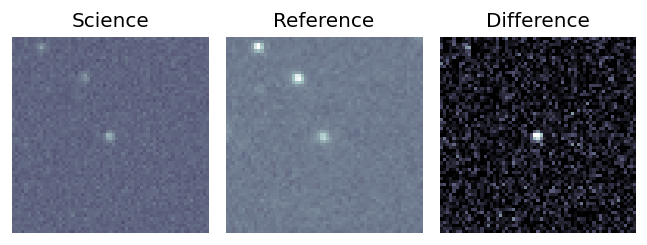
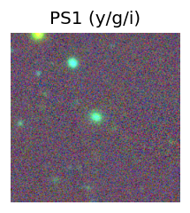
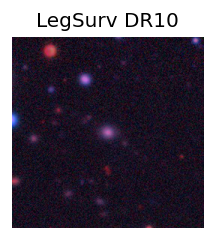
TESS: Sectors 82
SDSS (<15 kpc):Found SDSS phot-z: z=0.13; peak abs mag = -19.98
PS1: 0 sources in 3 arcsec
LegacySurvey: 1 sources in 3 arcsec Closest: d = 0.15 arcsec, 178.4 deg (east of north) photoz=0.07 (68% bounds 0.06, 0.08), type=SER peak abs mag (ext. corrected) = -18.54 (68% bounds -18.11, -18.88)
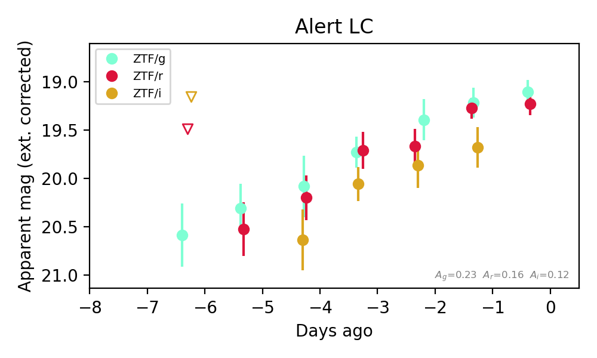
Extinction-corrected gr color:
From alerts: -0.12 +/- 0.17 mag
Extinction-corrected gi color:
From alerts: -0.46 +/- 0.26 mag
Extinction-corrected ri color:
From alerts: -0.4 +/- 0.24 mag
Consistent with synchrotron, g-r>0!
Rise Rate:
g: 0.24 mag/day
r: 0.25 mag/day
i: 0.26 mag/day
Fade Rate:
4. [ZTF] ZTF26abysngk (FBOT?) [Back to Top] [Share] [Trigger Swift] [Fritz Alert] [Fritz Source] [Lasair]RA, Dec: 20.80665, -3.1305 1h23m13.60s, -3d-7m-49.81sGalactic (l, b): 141.87093, -64.82688 ext(g-r) = 0.04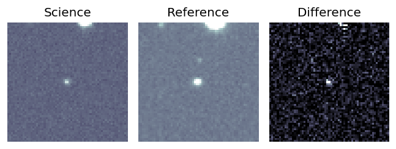
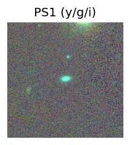
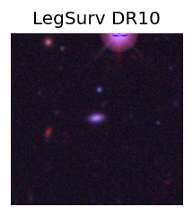
TESS: Sectors [ 3 30 42 43 70 97]
SDSS (<15 kpc):Found SDSS phot-z: z=0.13; peak abs mag = -19.97
PS1: 0 sources in 3 arcsec
LegacySurvey: 1 sources in 3 arcsec Closest: d = 0.34 arcsec, 56.1 deg (east of north) photoz=0.08 (68% bounds 0.06, 0.11), type=SER peak abs mag (ext. corrected) = -18.9 (68% bounds -18.32, -19.44)
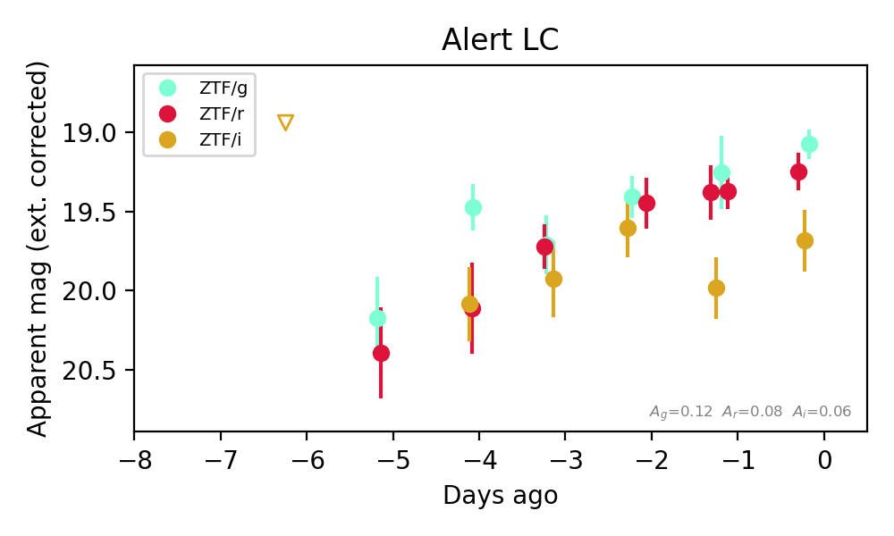
Extinction-corrected gr color:
From alerts: -0.17 +/- 0.15 mag
Extinction-corrected gi color:
From alerts: -0.61 +/- 0.22 mag
Extinction-corrected ri color:
From alerts: -0.43 +/- 0.23 mag
Rise Rate:
g: 0.16 mag/day
r: 0.2 mag/day
i: 0.04 mag/day
Fade Rate:
5. [ZTF] ZTF26abyukgq (Afterglow?) [Back to Top] [Share] [Trigger Swift] [Fritz Alert] [Fritz Source] [Lasair]RA, Dec: 36.86998, 17.65749 2h27m28.79s, 17d39m26.96sGalactic (l, b): 153.10698, -39.52125 WARNING: 2.92 deg from ecliptic plane ext(g-r) = 0.338


TESS: Sectors [42 70 71]
PS1: 0 sources in 3 arcsec
LegacySurvey: 1 sources in 3 arcsec Closest: d = 0.52 arcsec, 156.6 deg (east of north) photoz=0.03 (68% bounds 0.03, 0.05), type=REX peak abs mag (ext. corrected) = -16.99 (68% bounds -16.42, -18.04)

Extinction-corrected gr color:
From alerts: 0.07 +/- 0.24 mag
Extinction-corrected gi color:
From alerts: -0.58 +/- 99 mag
Extinction-corrected ri color:
From alerts: -0.65 +/- 99 mag
Consistent with synchrotron, g-r>0!
Rise Rate:
g: 0.1 mag/day
r: 0.69 mag/day
i: 0.07 mag/day
Fade Rate:
r: 0.63 mag/day
i: 0.21 mag/day
6. [ZTF] ZTF26abzidlp (Afterglow?) [Back to Top] [Share] [Trigger Swift] [Fritz Alert] [Fritz Source] [Lasair]RA, Dec: 304.10918, -1.02218 20h16m26.20s, -1d-1m-19.85sGalactic (l, b): 42.03795, -19.30789 ext(g-r) = 0.159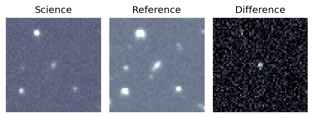
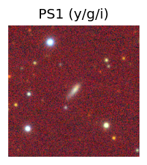

TESS: Sectors [54 81]
SDSS (<15 kpc):Found SDSS phot-z: z=0.08; peak abs mag = -18.17
PS1: 0 sources in 3 arcsec
LegacySurvey: 0 sources in 3 arcsec
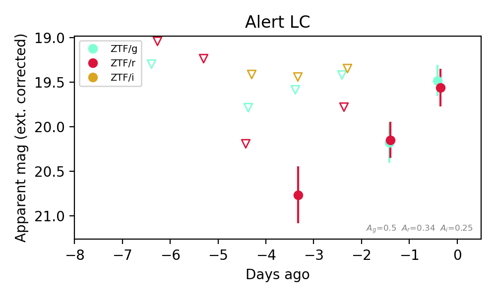
Extinction-corrected gr color:
From alerts: -0.08 +/- 0.28 mag
Extinction-corrected ri color:
From alerts: 1.33 +/- 99 mag
Consistent with synchrotron, g-r>0!
Rise Rate:
g: 0.7 mag/day
r: 0.41 mag/day
Fade Rate:
7. [ZTF] ZTF26abzitwz (Afterglow?) [Back to Top] [Share] [Trigger Swift] [Fritz Alert] [Fritz Source] [Lasair]RA, Dec: 344.67611, 36.80128 22h58m42.27s, 36d48m4.59sGalactic (l, b): 99.0708, -20.79267 ext(g-r) = 0.127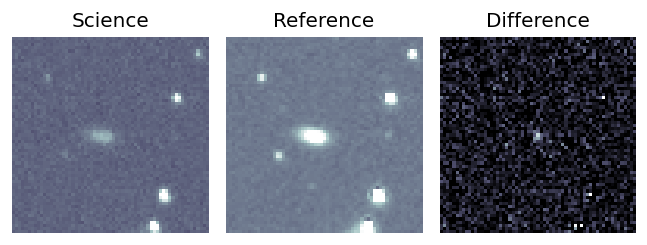
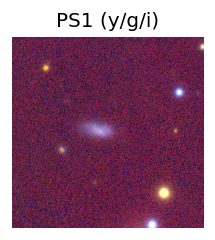

TESS: Sectors [16 56 83]
PS1: 1 source in 3 arcsec Closest: d = 2.88 arcsec photoz=0.06+/-0.01 peak abs mag = -17.01
LegacySurvey: 0 sources in 3 arcsec
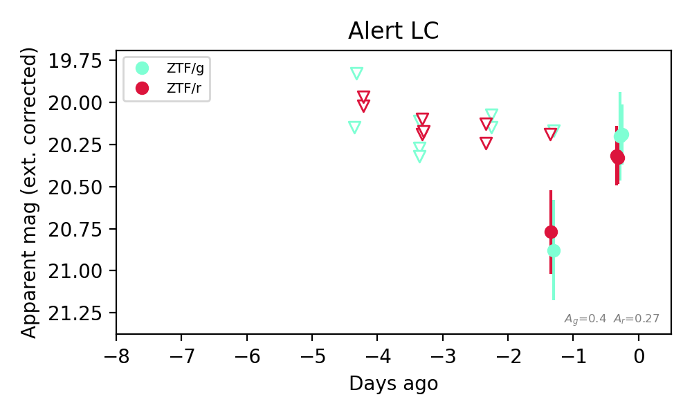
Extinction-corrected gr color:
From alerts: -0.13 +/- 0.19 mag
Consistent with synchrotron, g-r>0!
Rise Rate:
g: 0.66 mag/day
Fade Rate:
8. [ZTF] ZTF26abziytu (FBOT?) [Back to Top] [Share] [Trigger Swift] [Fritz Alert] [Fritz Source] [Lasair]RA, Dec: 0.57396, 18.81895 0h 2m17.75s, 18d49m8.23sGalactic (l, b): 107.06952, -42.53412 ext(g-r) = 0.035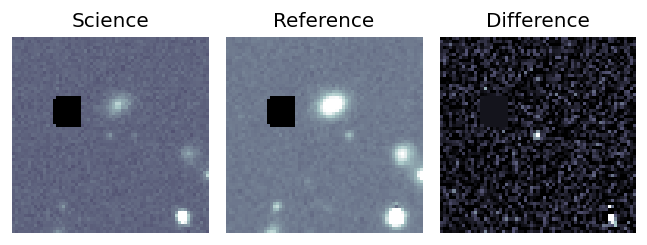
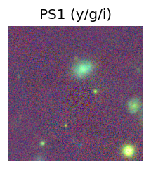
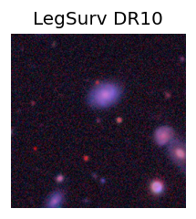
TESS: Sectors 84
PS1: 0 sources in 3 arcsec
LegacySurvey: 1 sources in 3 arcsec Closest: d = 0.12 arcsec, 174.3 deg (east of north) photoz=0.69 (68% bounds 0.57, 0.8), type=REX peak abs mag (ext. corrected) = -22.66 (68% bounds -22.17, -23.04)
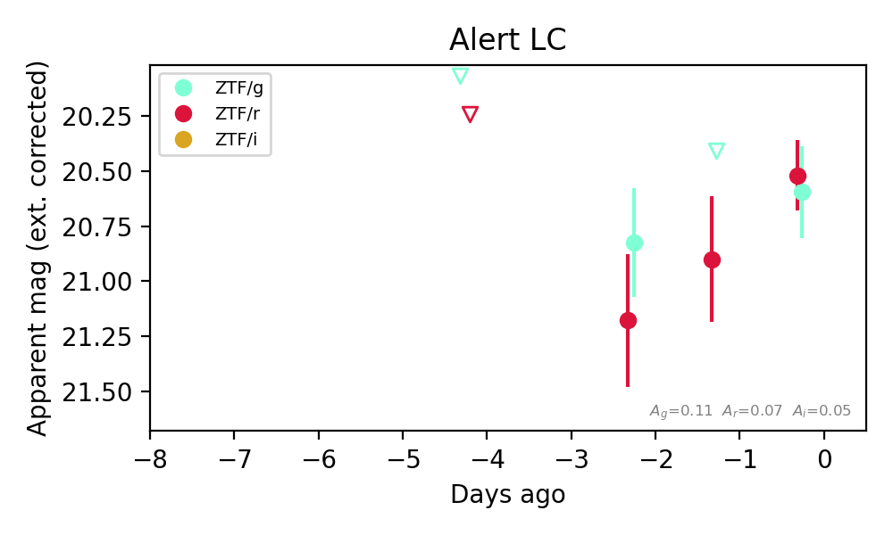
Extinction-corrected gr color:
From alerts: 0.08 +/- 0.26 mag
Consistent with synchrotron, g-r>0!
Rise Rate:
r: 0.33 mag/day
Fade Rate:
9. [ZTF] ZTF26abzjpiy (Afterglow?) [Back to Top] [Share] [Trigger Swift] [Fritz Alert] [Fritz Source] [Lasair]RA, Dec: 20.38675, 25.46407 1h21m32.82s, 25d27m50.65sGalactic (l, b): 131.4382, -36.90987 ext(g-r) = 0.13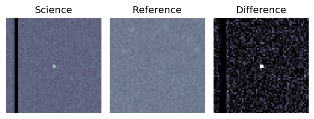
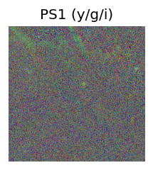
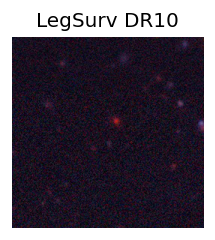
TESS: Sectors [17 57 84]
SDSS (<15 kpc):Found SDSS phot-z: z=0.62; peak abs mag = -25.31
PS1: 0 sources in 3 arcsec
LegacySurvey: 1 sources in 3 arcsec Closest: d = 4.18 arcsec, 186.3 deg (east of north) photoz=0.57 (68% bounds 0.4, 0.76), type=REX peak abs mag (ext. corrected) = -25.05 (68% bounds -24.13, -25.84)
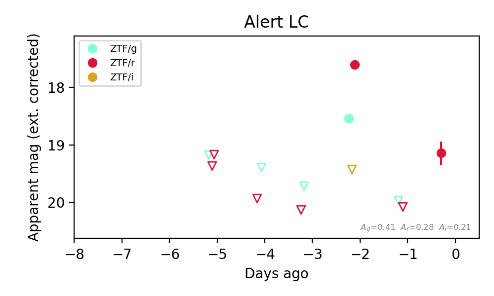
Extinction-corrected gr color:
From alerts: 0.94 +/- 0.05 mag
Extinction-corrected gi color:
From alerts: -0.88 +/- 99 mag
Extinction-corrected ri color:
From alerts: -1.83 +/- 99 mag
Consistent with synchrotron, g-r>0!
Rise Rate:
g: 1.25 mag/day
r: 2.25 mag/day
Fade Rate:
g: 1.37 mag/day
r: 2.46 mag/day